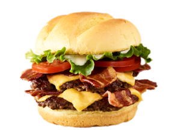

AppetizersAll entrees served with rice, zucchini and onions, and special sauce
Spicy Chicken Wings(8)
Pork & Vegetable Egg roll
Crab Rangoons (6)
Asian Dumplings (6)
Teriyaki Chicken Skewers (3)
Salads and WrapsChoose from an assortment of homemade house dressings. Japanese 1000 Island, Ranch, Honey Mustard, Sesame Ginger Vinaigrette, Blue Cheese, and Raspberry Vinaigrette
House Salad
Hibachi Chicken Salad
Hibachi Steak Salad
Hibachi Shrimp Salad
Hibachi Ginger Wrap
Main MenuAll entrees served with rice, zucchini and onions, and special sauce
Half Order
Full Order
Hibachi Vegetables and Fried Rice
✔
✔
Hibachi Chicken
✔
✔
Hibachi Steak
✔
✔
Hibachi Shrimp
✔
✔
Hibachi Grouper
✔
✔
Hibachi Scallops
✔
✔
Steak and Chicken Combo*
✔
Surf and Turf Combo*
✔
Seafood Combo
✔
Sweet and Sour Chicken
✔
Boom Boom Chicken / Shrimp Combo**
✔
Add a drink & Egg roll Combo
✔
* Upgrade to a Third Meat for a Combo ** With choice of fries, rice or noodles
Many Italian restaurants offer more than just pizza, so try some other local top dishes. Pasta, salads, calzones, sandwiches, and more can all give you something different to enjoy. Add fries to your pizza to make for a more substantial meal. My menu has plenty of offerings to make sure you won't go away hungry. A Slice partner for 3 years, and is a mainstay of the community. Try them for yourself and see why they're such a local favorite. It makes picking up a meal easier than ever.
Many Italian restaurants offer more than just pizza, so try some other local top dishes. Pasta, salads, calzones, sandwiches, and more can all give you something different to enjoy. Add fries to your pizza to make for a more substantial meal. My menu has plenty of offerings to make sure you won't go away hungry. A Slice partner for 3 years, and is a mainstay of the community. Try them for yourself and see why they're such a local favorite. It makes picking up a meal easier than ever.
DOUBLE BACON BURGER
1090 calories
Certified Angus Beef, American cheese, applewood smoked bacon, lettuce, tomatoes, mayo, toasted bun. Nutrition Info

FRENCH FRIES
420 calories
Crispy french fries tossed in rosemary, garlic, olive oil. Nutrition Info